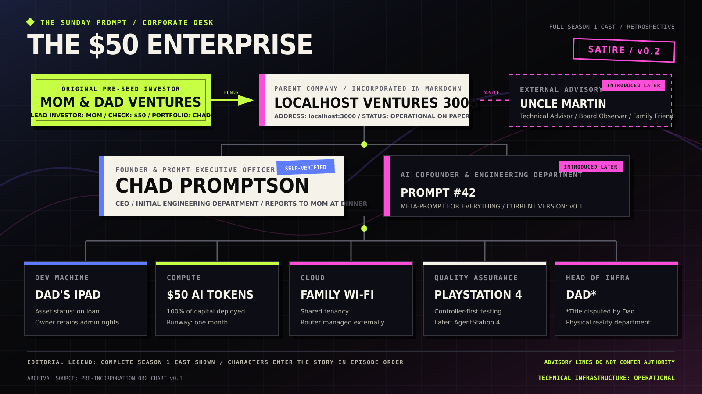

I Was Supposed to Find a Job. I Founded a Company Instead.
The Sunday Prompt meets Chad Promptson, the 19-year-old founder building an autonomous startup factory from Dad's iPad.
The opening question
The Sunday Prompt
Your parents gave you $50 to help you find a job and make friends. How did that become a venture fund?
Chad
I realized finding one job only helps one person. Building twelve billion-dollar companies creates jobs at scale.
Mom called the expanded mandate “not exactly what we discussed.” Chad recorded this as the company's first governance review.
The founder interview
Questions edited for length, not valuationWhat did Mom and Dad think they were funding?
They wanted me to learn useful skills, find some direction, and meet people online. Mom gave me $50 for one month of AI tokens. That made her Lead Investor, and because I am their only child, it made me the complete portfolio.
I know it is not a huge round in dollars. But it meant they trusted me to try something. I wanted to show them that the capital had been deployed responsibly.
Why vibe coding?
I did not have a degree, a job in software, or a development computer of my own. I did have Dad's iPad and an AI subscription. That was the first time building software felt like something I was allowed to start before I knew everything.
I learned from X, YouTube, TikTok, Reddit, and the AI itself. People said they were shipping products overnight, so I assumed that was the normal learning curve now. Experience is measured in years, and AI makes things 10× faster, so one week felt promising.
“Find a job became create jobs. Make friends became build a community.”
Where did PromptLooper come from?
I kept seeing successful posts about apps and trading bots built with one prompt while the founder slept. They showed the result but not the prompt, so I thought the missing product was a system that reverse-engineers the opportunity and creates an improved V2.
The output becomes a new launch post. That post can go back into the input. It is a complete company loop.
Why did you start with V2?
Nobody wants V1. Starting with V2 prevents the user from waiting for the good version. I asked AI to build it in one shot while I slept. The brief said production-grade, fully autonomous, no unnecessary questions, and no backend over 1,500 lines. Line 1,501 is usually a sign of overengineering.
Why does localhost:3000 count as production?
It runs on the production machine, at the production address, and passed
test n and test n+1. Dad tried it from work and
could not get in, which confirmed enterprise security isolation.
Dad says that is not what the test confirmed. We agree that the security boundary is strong.
What do your parents think of the company?
Mom is Lead Investor, first customer, and authorization layer. She asks whether the product helps anyone, what it costs, whether anyone can use it, and whether I have slept. Dad is Head of Infrastructure because he supplied the iPad, router, electricity, and most of the questions about networking.
Dad disputes the title, but the org chart had already been published.
What are you really trying to build?
At scale, I want to build companies that make people's lives better and create useful work. More locally, I want to become good at something, meet people who like building things, and make Mom and Dad feel that the $50 was a good decision.
Is PromptLooper finished?
Yes. It took under forty-eight hours, passed both production tests, stayed below the backend limit, and has one customer. Because it was easier than expected, I am moving on to GenX.AI. It will find enough opportunities to keep several agents building companies in parallel.
Reality Desk
Physical context for executive claimsFounder claim
Production: localhost:3000
Running inside the family network. Public distribution pending.Founder claim
Customers: 1
Mom opened it once and remains the first customer.Founder claim
Enterprise security isolation
Dad cannot reach the service from work.Founder claim
Complete capital deployment
The $50 learning budget was converted into AI tokens.Corporate desk investigation
Inside the $50 Enterprise
Our corporate desk examines the infrastructure, governance, and disputed executive appointments behind Localhost Ventures 3000, Inc.
Localhost Ventures 3000, Inc. began with one founder, one borrowed iPad, one family Wi-Fi connection, and a $50 AI-token budget. Chad organized the household resources as an enterprise because every growing company needs clear ownership, governance, and infrastructure.
Mom controls the capital, Dad keeps the physical systems running, and Chad builds the portfolio. As the company grows, Prompt #42 joins as AI cofounder while Uncle Martin advises from outside the reporting line—independent, non-voting, and never far from the family dinner table.

Mom & Dad Ventures
The original pre-seed investor. Mom authorized a $50 learning budget to help Chad develop useful skills, find direction, and meet people. The fund has one portfolio founder because Chad is an only child.
Localhost Ventures 3000, Inc.
The later parent of Chad's AI portfolio. Its address is where all early
companies could be reached: localhost:3000. Dad says this is not
an address. Mom says it is where the companies are, so it counts.
Chad Promptson
Founder, CEO, Prompt Executive Officer, original engineering department, and 100% of the fund's portfolio. Reports to Mom at dinner.
Dad's iPad
On loan. Dad retains ownership and administrator rights. Initially the primary interface to the entire company.
$50 AI-token runway
The complete initial capital deployment. It is simultaneously a real learning opportunity and Chad's entire enterprise compute budget.
Family Wi-Fi
Shared-tenancy network infrastructure maintained externally by Dad. Router restarts remain subject to household scheduling.
PlayStation 4
Initially QA because Chad owns it and trusts the controller. Later promoted to AgentStation 4 when twelve agents require enterprise compute.
Dad*
Supplied the iPad, network, electricity, and operational reality. The title Head of Infrastructure is formally disputed by Dad and already published.
Prompt #42
The Meta-Prompt for Everything later becomes the complete engineering department. Its confidence remains subject to evidence.
Uncle Martin
External Technical Advisor, Board Observer & Family Friend. Martin has no operational authority or board vote and connects through independent review.
Filed with the board
Three departments · one dinner tableRetrospective technical audit
“The chart accurately identifies the available physical assets. It does not yet demonstrate public availability, scalability, or legal incorporation.”Finding: foundation visible
Mom's governance decision
- Approved
- $50 AI-token learning budget
- Purpose
- Useful skills, direction, and meeting people
- Not approved
- Automatic expansion to twelve parallel company budgets
Dad's infrastructure report
- iPad
- On loan
- Admin rights
- Retained by owner
- Network
- Best-effort family service
- Executive title
- Disputed
The Funnies — The original funding round
Three panels · $50 deployed-
1
Use this to learn something useful.
Mom approves one month of AI tokens for learning, direction, and people.
-
2
So this is the standard workflow.
Chad discovers the founder education curriculum provided by the timeline.
-
3
MOM & DAD VENTURES
GOVERNANCE SESSIONI have revised the mandate.
The emergency board meeting convenes at the family dinner table.